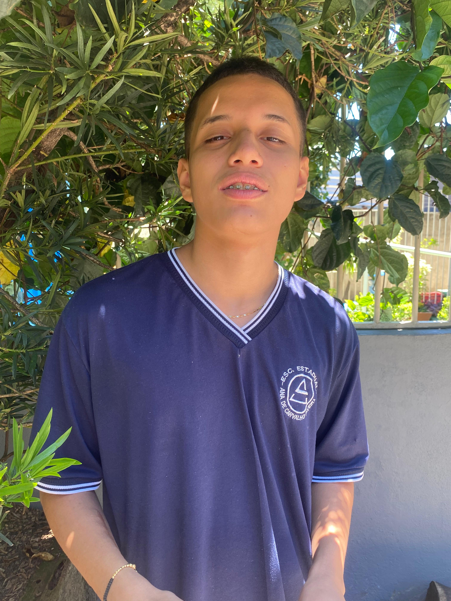

Descrição do portifolio: No curso, Thomas aprendeu uma boa base de programação, principalmente em HTML e JavaScript. Ele teve mais dificuldade com Arduino, mas se destacou na parte de criação de páginas. Gostou muito de trabalhar no Visual Studio Code, e o momento mais marcante foi quando conseguiu criar um site básico sozinho.Mesmo não querendo seguir na área, Thomas reconhece que o que aprendeu pode abrir novas oportunidades. Para ele, o mais importante é entender o impacto da tecnologia nas pessoas. O tempo do curso foi suficiente e o ajudou a trabalhar melhor em grupo. O seu conselho é, não fique ansioso, no final tudo se encaixa.